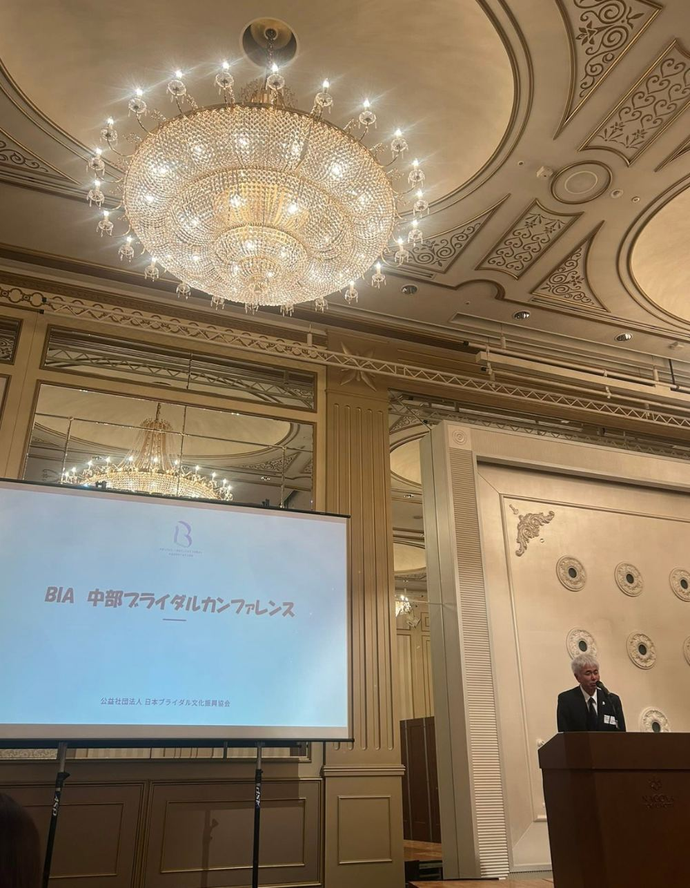
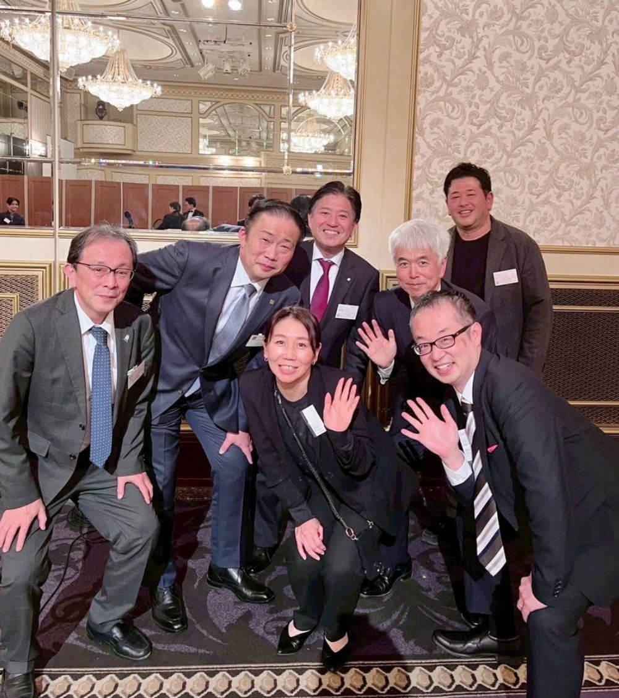

2026年3月18日、公益社団法人 日本ブライダル文化振興協会（BIA）主催、中部B.M.C.および愛知ウェディング協議会が協力する第1回 中部ブライダルカンファレンスが開催されました。


当日は、参加をお申し込みくださった愛知ウェディング協議会の会員様とともに、代表理事、そして理事2名が出席いたしました。
活動報告では、中村理事より、私たちの取り組みをご紹介させていただきました。この一年、そしてこれまで積み重ねてきた活動を、中部地区の他団体の皆さまにお伝えできたことは、大変貴重な機会でした。
カンファレンスでは、各団体の活動についても、お伺いすることができました。同じ中部地区でブライダルに関わる団体でも、それぞれに立ち位置や方向性は異なります。お互いの活動を知り、どこを向いて歩んでいるのかを理解し合うことで、「では、力を合わせて何ができるのか」がより具体的にイメージできる——そんな時間となりました。
一団体だけでできることには、限りがあります。けれど、それぞれの強みを持ち寄れば、業界全体をより大きく前へ動かしていけるはずです。その手応えを感じられたことが、今回の何よりの収穫でした。
そして、ブライダル総研 所長の森様によるセミナーでは、今のニーズについてお話しいただきました。新郎新婦が結婚式に何を求めているのか。その姿は、着実に変わり続けています。データを通して今のニーズを直視することで、改めて、ウェディング業界として変化が求められていることを感じられました。
変わりゆくニーズに、私たちはどう応えていくのか。目の前に突きつけられたその問いを、団体を越えて共有できたことに、大きな意味があったと思います。
団体の垣根を越えて、中部地区が一つになって業界の未来を考える。第1回となる今回のカンファレンスは、その大切な一歩となりました。
主催いただいたBIA様、ともに協力団体として参加した中部B.M.C.の皆さま、そしてご参加いただいた会員の皆さま、ありがとうございました。愛知ウェディング協議会は、これからも地域の仲間とともに、業界の発展に向けて歩んでまいります。